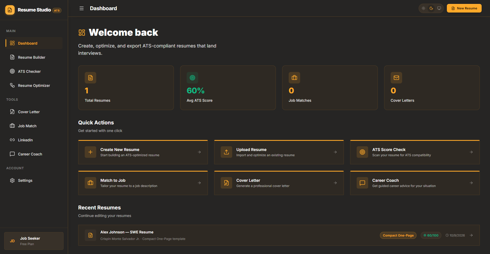
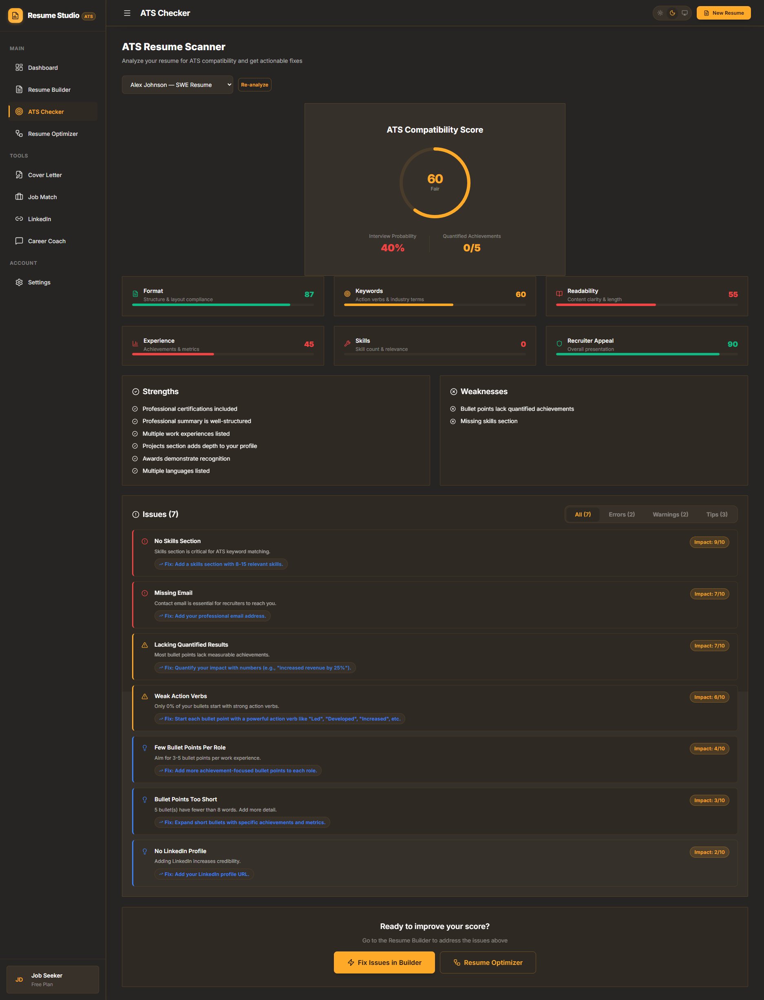
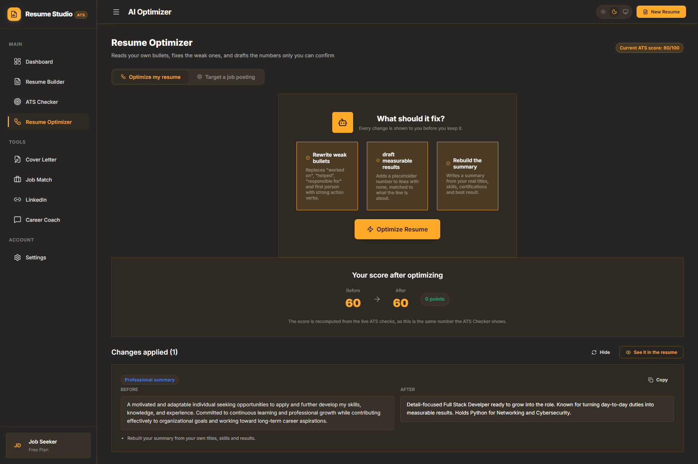
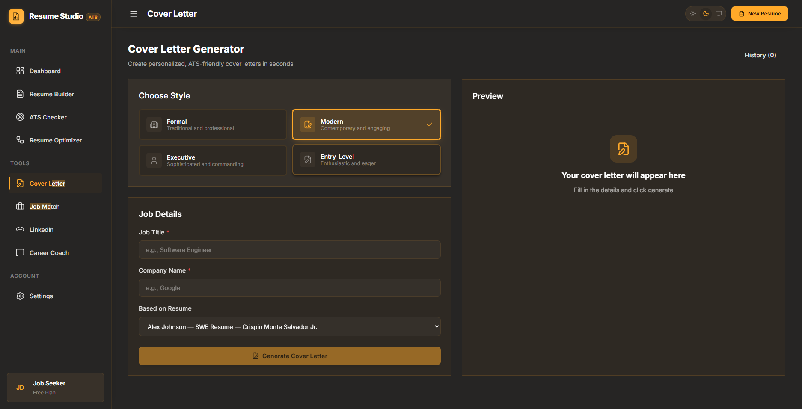

The problem
Preparing a resume involves balancing content, layout, and applicant tracking system requirements.
Web applications
A clearer path from experience to opportunity.

Preparing a resume involves balancing content, layout, and applicant tracking system requirements.
A browser-based workspace brings real-time resume previews, AI-assisted content generation, and ATS scoring into one flow.
A resume platform with in-browser PDF export and immediate visual feedback.

A central workspace for recent resumes, ATS scores, and quick access to resume tools.
View full screenshot
Review compatibility scores, strengths, weaknesses, and suggested fixes in one detailed report.
View full screenshot
Review suggested changes to resume content alongside before-and-after comparisons.
View full screenshot
Choose a writing style, enter job details, and prepare a cover letter based on an existing resume.
View full screenshot